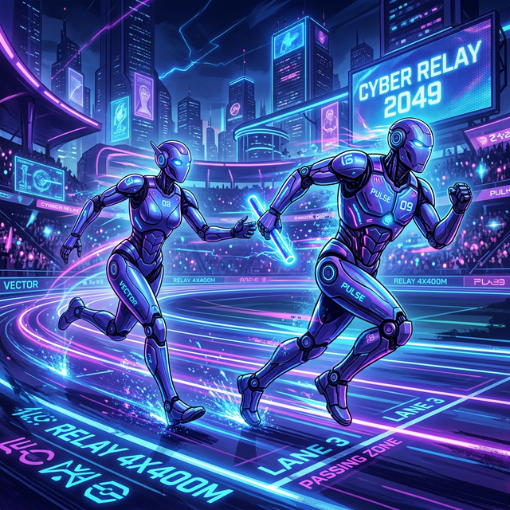
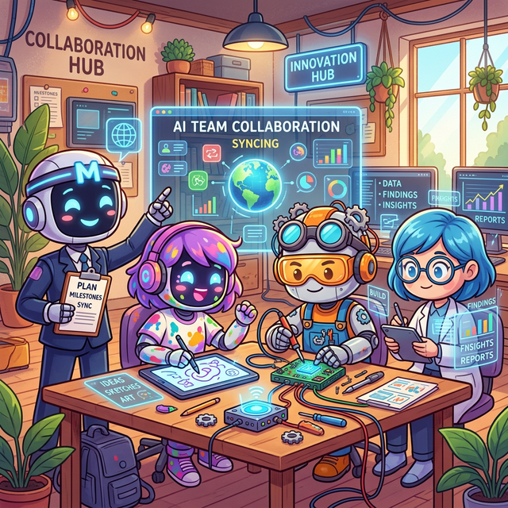
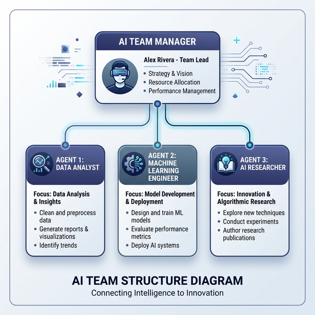
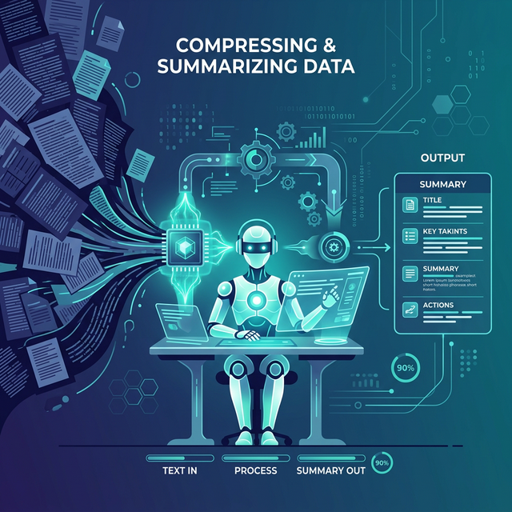
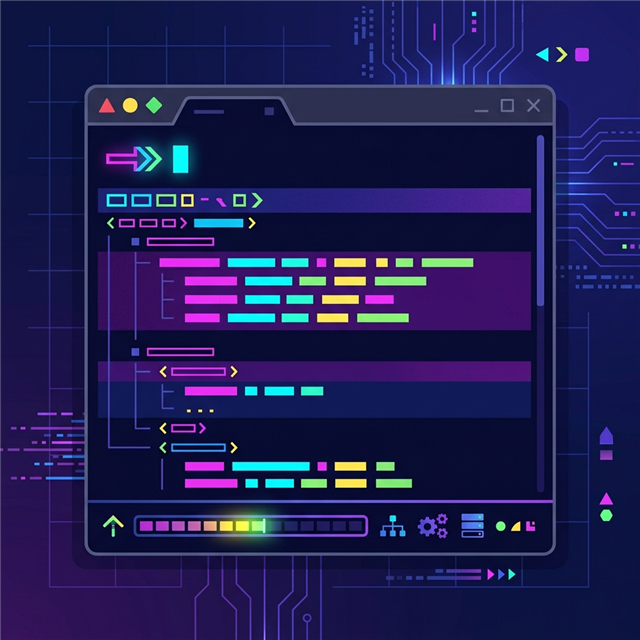
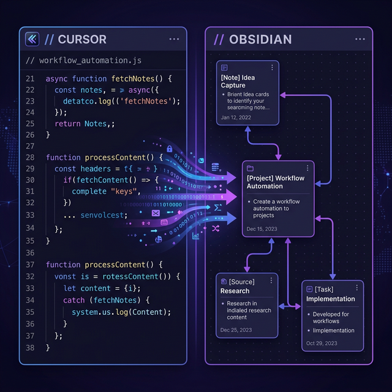
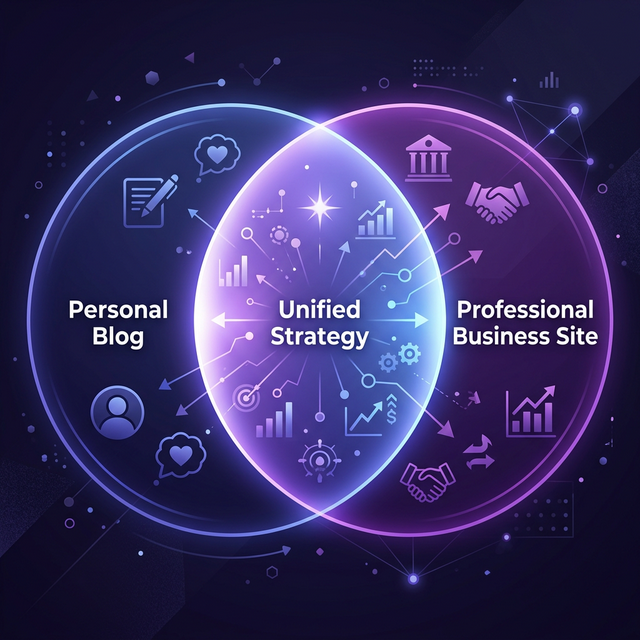
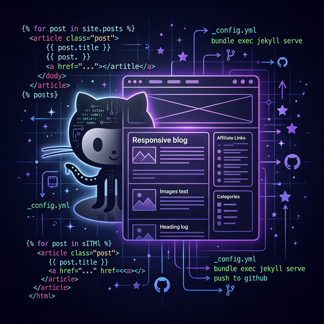

最新ブログ記事

AI活用
2026-04-04
AIツール同士のリレープレー〜1つのAIが止まっても完走できる仕組みの作り方〜
自動化
2026-04-04
AI CLIツールのスキル管理術 — Claude Code × AntiGravity 両刀使いの実践記
AI活用
2026-03-28
Google FlowでAIキャラをアニメのまま動かそうとしたら全部リアル人間になった話

AI開発
2026-03-18
AIに名前と性格を与えたら、チームっぽくなった話 ～菅さん・ミク・ケンジ・サトルと働く1日～

AI開発
2026-03-18
Claude CodeでAIチームを作った話 ～社長・マネージャー・担当3名の組織を1人で構築～
AI開発
2026-03-18
Claude CodeとAntigravityのリレープレー ～マルチエージェントデモをAI2本で完走した話～

AI開発
2026-03-18
Claude Codeのコンテキストが溜まったら？/compactで要約して続行する方法

AI活用
2026-03-16
Windows日本語環境でClaude Codeステータスラインを動かす方法【全記録】
福祉×テック
2026-03-15
福祉デイケアの属人化問題〜解決したいと考えているが、まだできていない話〜
AI活用
2026-01-31
5ヶ月ぶりのブログ復活！AI「Antigravity」を使ってみた感想
自動化
2025-08-14
Vault自動化と引き継ぎ整備の実践記録

自動化
2025-08-10
Cursor×Obsidian連携で日次ワークを短縮する実践ログ

サイト制作
2025-08-09
ハイブリッドサイト戦略の実装ガイド（個人ビジネス向け）
ナレッジ管理
2025-08-08
Obsidian Vault完全最適化プロジェクト - 自律型システム管理の実現
ライフスタイル
2025-08-06
4児の父が語る、仕事と家庭の両立で学んだこと
福祉×テック
2025-08-04
福祉の現場で実践する業務効率化の具体的方法
ナレッジ管理
2025-08-04
なぜ私は全てのメモをObsidianに集約したのか？

サイト制作
2025-08-04
GitHub Pagesでアフィリエイトブログを構築した話
オチつかない人
沖縄 / 福祉デイケア職員 / 4児の父 / AI独学中
沖縄の福祉デイケアで働きながら、AIや自動化を独学で試し続けています。プログラマーでも情報系でもありません。記録・連絡・引き継ぎ……現場にあふれる「手作業」をどうにかしたくて、ある日Claude Codeを触り始めました。
うまくいくことより、うまくいかないことの方がずっと多い。それでも続けているのは、「非エンジニアが本当にAIで現場を変えられるのか」を自分で確かめたいからです。このブログはその実験ログです。
「難しそうで手が出ない」「やってみたけど挫折した」という方に、一番役に立てると思っています。技術的にきれいな記事ではなく、同じ立場から書いた泥臭い記録を読んでもらえたら。
福祉デイケア
Claude Code
業務自動化
Obsidian
4児の父